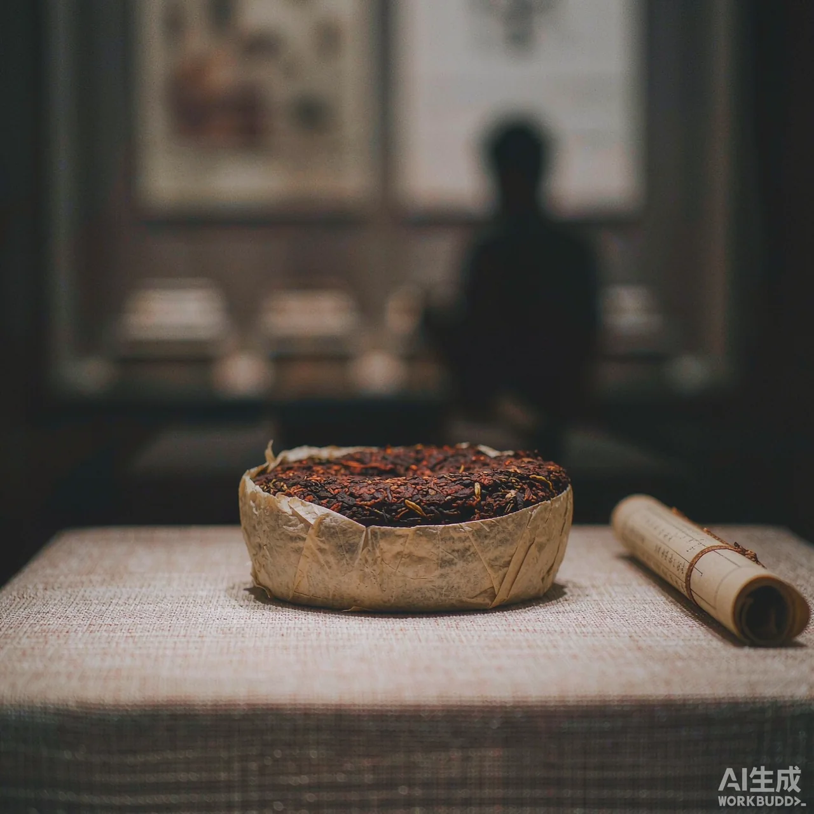
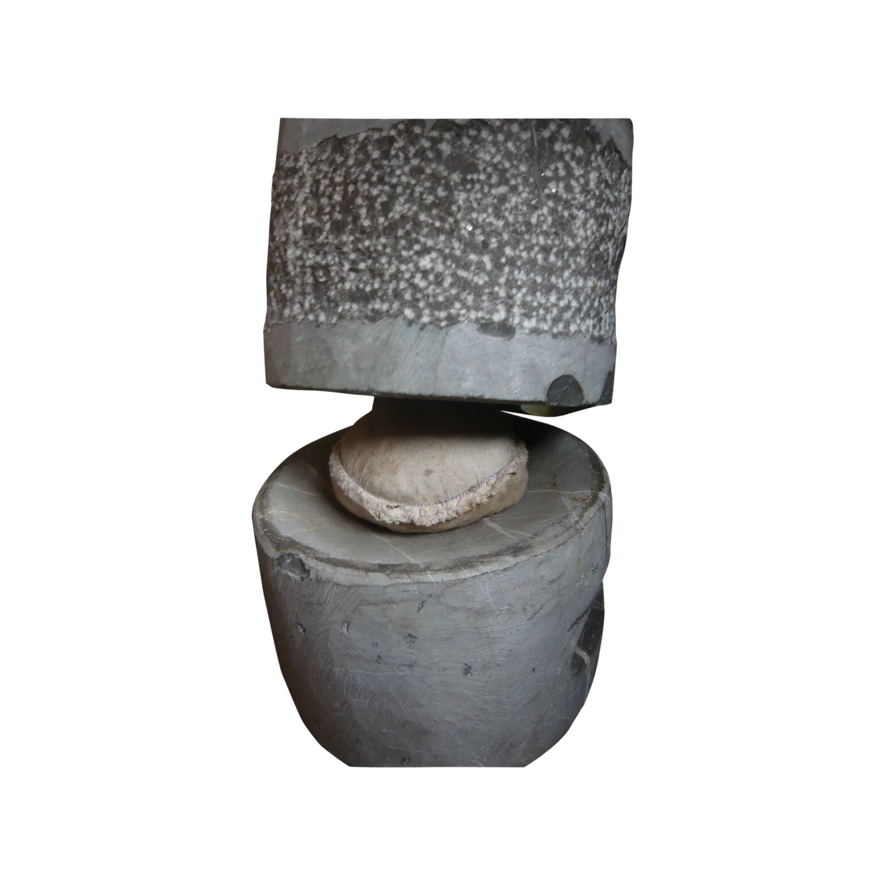
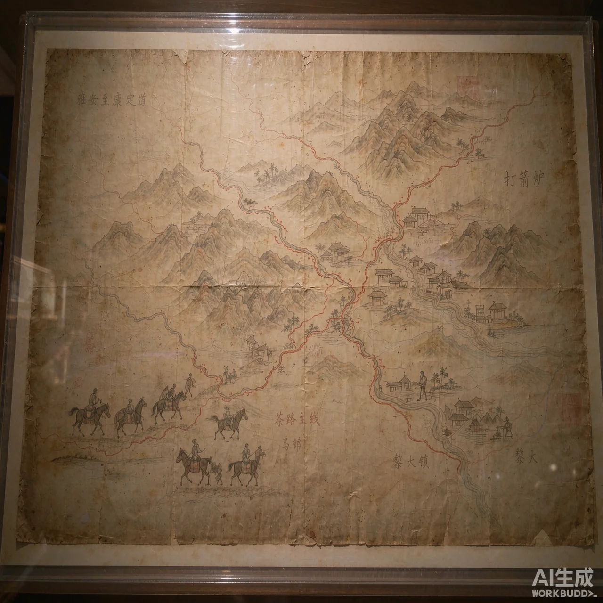
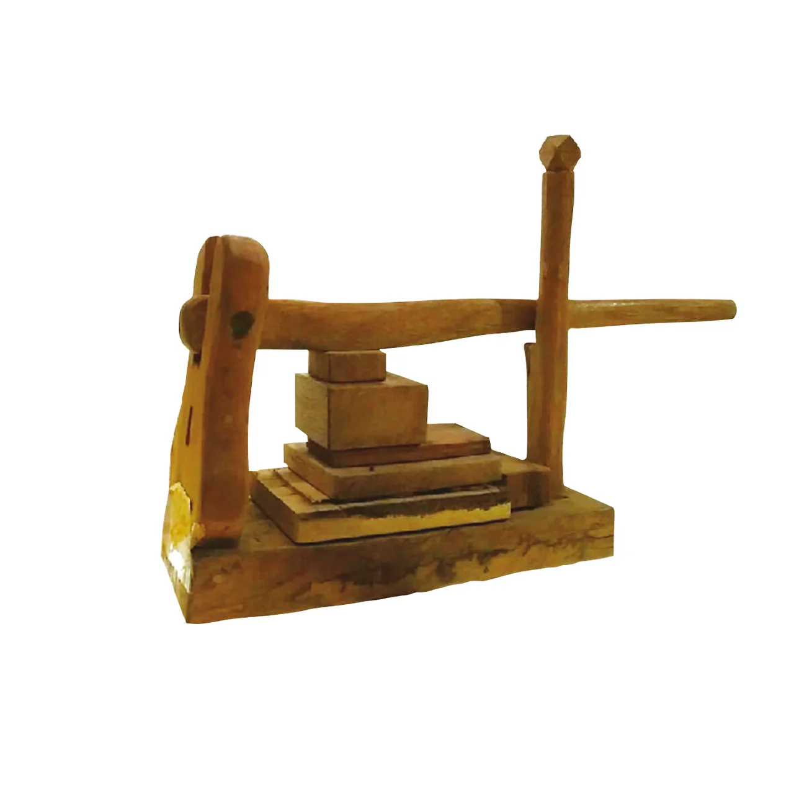

鄂尔泰贡茶
E'ertai Tribute Tea
因清代云贵总督鄂尔泰进呈宫廷而得名。茶饼绵纸之上，仍可辨认当年内飞的朱印，见证普洱入贡的百年荣光。
Named for E'ertai, the Qing Governor-General who presented it to the imperial court — its wrapper still bears the vermillion seal of that era.
昆明 · 钱王街 86 号 · 建于清道光年间府邸之上
KUNMING · NO.86 QIANWANG ST · A QING-ERA MANSION REBORN
云南省茶文化博物馆 —— 在百年院落里，收藏云南茶的前世今生。
Yunnan Tea Culture Museum — where a century-old courtyard keeps the story of tea.
云南省茶文化博物馆 · 国家三级博物馆
YUNNAN TEA CULTURE MUSEUM · NATIONAL GRADE-III MUSEUM

理 念
OUR ETHOS
博物馆坐落于昆明五华区钱王街86号，依托清代云贵总督鄂尔泰府邸「一颗印」合院而建。青瓦木构之间，近两千件藏品静静陈列——从清宫贡茶到马帮鞍鞯，从古茶树标本到非遗器具，讲述一片叶子如何翻越山海、抵达世界的桌面。
At No.86 Qianwang Street, the museum occupies the restored E'ertai Mansion — a Qing-era "one-print" courtyard once home to the Governor-General of Yunnan and Guizhou. Within its timber frames, nearly 2,000 objects trace tea's journey from tribute cakes to the world's tables.
精 选 馆 藏
SELECTED COLLECTION

因清代云贵总督鄂尔泰进呈宫廷而得名。茶饼绵纸之上，仍可辨认当年内飞的朱印，见证普洱入贡的百年荣光。
Named for E'ertai, the Qing Governor-General who presented it to the imperial court — its wrapper still bears the vermillion seal of that era.

清代茶马古道原件。墨线蜿蜒，自普洱经大理、丽江入藏，标注着马帮歇脚的每一处驿站与垭口。
An original Qing-era map of the Ancient Tea-Horse Road, ink lines tracing the caravan route from Pu'er through Dali and Lijiang into Tibet.

石制与铜制模具成对陈列，蒸茶、入模、压制、脱模——一方茶饼的手作记忆，尽在掌间的温度里。
Stone and bronze moulds, paired and worn smooth — the hand-pressing craft behind every tea cake, remembered in weight and warmth.
「高山云雾出好茶」
"High mountains and mist make the finest tea."
—— 滇地古谚 · 馆藏茶园手记 — An old Yunnan saying, from the museum's garden notes
茶 事
TEA RITUALS
在老院落里，看一盏茶如何被从容地泡开。
Watch a pot of tea unfold, slowly, in the old courtyard.
坐下来，免费喝一杯云南的山水。
Sit down and taste a cup of Yunnan's mountains.
围坐一席，听茶人讲山野与时光的故事。
Gather around the table and hear stories of hills and time.
亲手体验非遗技艺，做一方自己的茶饼。
Experience the intangible heritage and press your own cake.

到 访
VISIT US
昆明五华区钱王街 86 号
No.86 Qianwang St., Wuhua Dist., Kunming
全年 10:00 – 18:00
Daily 10:00 – 18:00
免费开放
Free admission
地铁 3 号线五一路站 C 口，步行 800 米
Metro Line 3, Wuyi Rd. Exit C, 800m walk